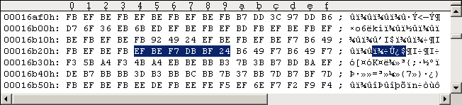
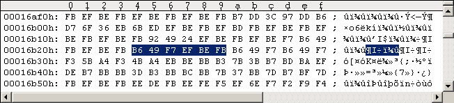
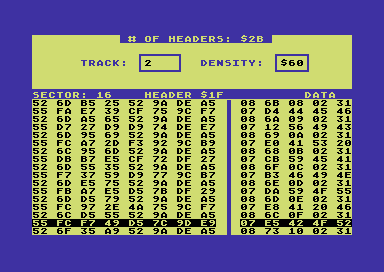
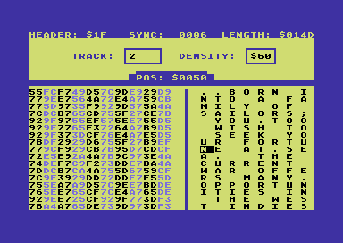
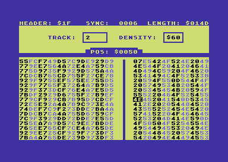
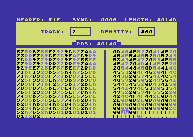
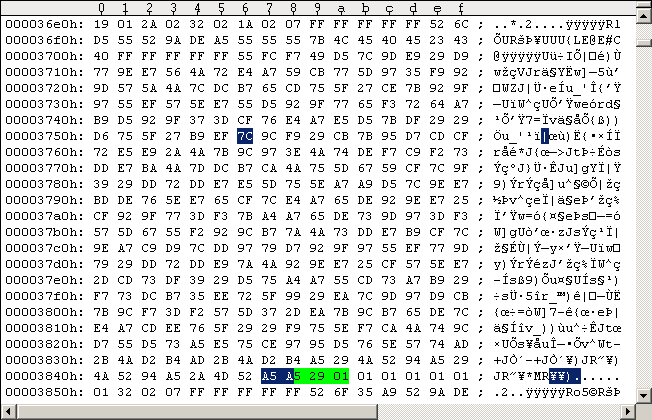
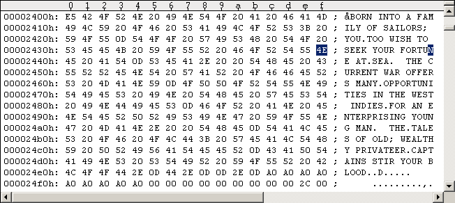

Main Index Routine Index Memory IndexPirates bugfixes
We know from the previous tutorial "Microprose Pirates 1987 Commodore 64 - Getting a clean image" that there are 2 bugs in the game. When you select 1640 as special historical time period and choose to be a French Privateer, then Dutch governors will always tell you they're at war with themselves. The other bug is only a mistyped letter in one of the player's initial life stories. Making the Dutch governor believe he's not at war with himself: We fixed this problem in the last tutorial. It was relatively easy to edit the file "chars.dta" in a D64 image. Now we have a G64 image and the 8:$0415 read sector routine shows the files are also encrypted on disk. This encryption is not standard GCR but something equivalent. I'll shortly summarize how I found the exact file location: We know the position of the buggy data table in C64 memory: C:$C2D1 46 52 45 4E 43 48 20 50 FRENCH P C:$C2D9 52 49 56 41 54 45 45 52 RIVATEER C:$C2E1 00 00 00 30 00 0A 02 2C ...0..., C:$C2E9 01 0C 00 00 00 00 04 02 ........ C:$C2F1 00 00 00 00 00 00 00 63 .......c C:$C2F9 5A 63 69 91 79 94 86 00 Zci.y... C:$C301 00 02 00 00 00 00 00 00 ........ C:$C309 00 FF FF 00 00 00 01 FF ........ C:$C311 00 00 00 00 01 00 FF FF ........ C:$C319 01 FF 01 35 CF B5 CF 00 ...5.... And it has to be modified as follows: C:$C2D1 46 52 45 4E 43 48 20 50 FRENCH P C:$C2D9 52 49 56 41 54 45 45 52 RIVATEER C:$C2E1 00 00 00 30 00 0A 02 2C ...0..., C:$C2E9 01 0C 00 00 00 00 04 02 ........ C:$C2F1 00 00 00 00 00 00 00 63 .......c C:$C2F9 5A 63 69 91 79 94 86 00 Zci.y... C:$C301 00 02 00 00 00 00 00 00 ........ C:$C309 00 FF FF 00 00 00 01 FF ........ C:$C311 00 00 00 FF 01 00 00 FF ........ C:$C319 01 FF 01 35 CF B5 CF 00 ...5.... The data table begins at C:$C308 ("C:" for C64 memory, "8:" for the 1541 drive memory). I traced the C:$0200 C64 transfer routine until the table gets transferred to the C64 memory (e.g. break on C:$0241 and wait until the table arrives). Then I switched to the disassembly in the 1541 drive (right-click into WinVice v1.22 disassembly window and select Drive 8) and got directly into the 8:$0625 transfer routine reading those bytes from the 1541 memory and sending them to the C64. Here's the exact position and content of the original data table in the 1541 memory ("negative format"): 8:$035C FF FF 00 00 FF FF FF F7 ........ 8:$0364 00 FF FF FF FF F7 FF 00 ........ The first byte of the table gets transferred to the C64 when [$B5-$B6]=8:$0578 (3rd time the 8:$0625 routine is called to transfer a sector of the file). The bytes in the above table are obviously in somewhat "negative format": $FF will become $00 in C64 memory, $00 becomes $FF and $F7 becomes $01. We know we only have to exchange 2 bytes: [8:$0368]=$00 and [8:$036B]=$FF (that's [C:$C314] and [C:$C317] in C64 memory). The following table shows how the fixed data table looks like: 8:$035C FF FF 00 00 FF FF FF F7 ........ 8:$0364 00 FF FF FF 00 F7 FF FF ........ The 8:$0415 sector reading routine shows the data is encrypted on disk and there's a sector parity that is checked. The sector parity is calculated by xor'ing all decrypted data bytes against each other, so the result remains the same if we only exchange the position of 2 data bytes! Now take a look at the actual file data decryption (8:$043B-8:$0477). There are always 3 bytes belonging together: the first byte read (8:$043E: LDA $1C01) is used to decrypt the following 2 read bytes and the decryption is independent from others. So in order to exchange the 2 bytes of the table in C64 memory, we have to edit 6 bytes on the disk. You can get to the start of the above table decryption by setting a conditional breakpoint usingbreak 0454 if 8:.Y == 5Ain WinVice v1.22 (we break into the middle of the 3-byte decryption so we have to use 5A instead of 5C). You have to skip the breakpoint 2 times as the above location is in the 3rd sector of the file. The following table shows the bytes read from disk in encrypted (3 bytes) and decrypted form (2 bytes): [8:$035C]: [1C01]->EF BE FB = FF FF [8:$035E]: [1C01]->92 49 24 = 00 00 [8:$0360]: [1C01]->EF BE FB = FF FF [8:$0362]: [1C01]->EF BE F7 = FF F7 [8:$0364]: [1C01]->B6 49 FB = 00 FF [8:$0366]: [1C01]->EF BE FB = FF FF [8:$0368]: [1C01]->EF BE F7 = FF F7 <-> B6 49 F7 = 00 F7 [8:$036A]: [1C01]->DB BF 24 = FF 00 <-> EF BE FB = FF FF The last 2 rows show how we have to edit the data on disk to fix the table: the 3 encrypted bytes for the "FF FF" pattern are easy to find only 2 rows above. You can find the "00 F7" pattern by looking around in the already decrypted data bytes (e.g.m 480 4fform 300 35a), break on the decryption at that position while reloading "chars.dta" (using a conditional breakpoint) and note down the 3 associated encrypted bytes. (And btw: you can load "chars.dta" directly usingLOAD"CHARS.DTA",8,1.) I found such a memory location at 8:$04CC: [8:$04CC]: [1C01]->B6 49 F7 = 00 F7 Now we have to apply those changes (2x3=6 bytes) to the file on disk. Use "UltraEdit" in hex-mode to search the G64 for the encrypted byte sequence and change the bytes as shown above (the data table is unique, so there's only one on the disk). The following Figures #13+#14 show the original data table and how it has to be fixed.
Figure #13: Original data table in "chars.dta".
Figure #14. Fixed data table in "chars.dta".There are different Pirates versions, so the offsets in Figures #13+#14 may vary.
Fixing a minor typo: There's this typo in a certain player's "life story" located on disk side 1 Track 2 Sector 15. The following Figure #15 shows the selection of the sector in the Maverick v5.04 GCR Editor. Figure #16 shows the fixed sector data in ASCII format (press "A" to change to ASCII view). If the GCR Editor shows only crap as sector data then please read the "Maverick v5.04 GCR Editor "Bugfix"" in the older RapidLok6 patches for a workaround.


Figures #15+#16. Left: Select Track 2 Sector 14, $07 Data Sector; right: Typo fixed (ASCII).The following Figures #17+#18 show the fixed sector in hex-mode (data fix and sector parity fix). Track 2 is in normal DOS format, so the sector is encoded in the usual GCR format. The left side of the screenshots show the changes in the GCR code.


Figures #17+#18. Left: Typo fixed (hex), right: sector parity fixed.Use "UltraEdit" to apply the changes in the GCR code directly to the G64 file, never write a fixed sector to disk with the GCR Editor! Figure #19 shows the original sector data in "UltraEdit" and Figure #20 shows the changes (the offsets may vary). Notice: The green marked bytes are GCR-encoded off-bytes at the end of every DOS sector - they may be different on your disk (no problem - they are unused): a standard DOS data sector consists of 1 byte block ID ($07), 256 data bytes and 1 byte checksum, making 258*5/4=322.5 encoded data bytes on disk after the Sync mark; adding the usual 2 off-bytes (usually zeros) make 260*5/4=325, hence (325-322.5)=2.5 green marked bytes. Remember the factor 5/4 comes from the GCR encoding on disk: 4 memory bytes are converted to 5 GCR bytes on disk. The following bytes before the next Sync mark are (random) off-bytes as well.

Figure #19: Original G64 image Track 2 (Microprose Pirates disk side 1).
Figure #20: Fixed G64 image Track 2 (Microprose Pirates disk side 1).If you want to remaster a 1541 Pirates disk from the G64 and D64 images you need to fix Track 2 of the D64 image as well. See following Figure #21.

Figure #21: Fixed D64 image Track 2 (Microprose Pirates disk side 1).That's it. Note: This typo is already fixed in the original PC version of the game (for MS-DOS), so it's really a typo here.